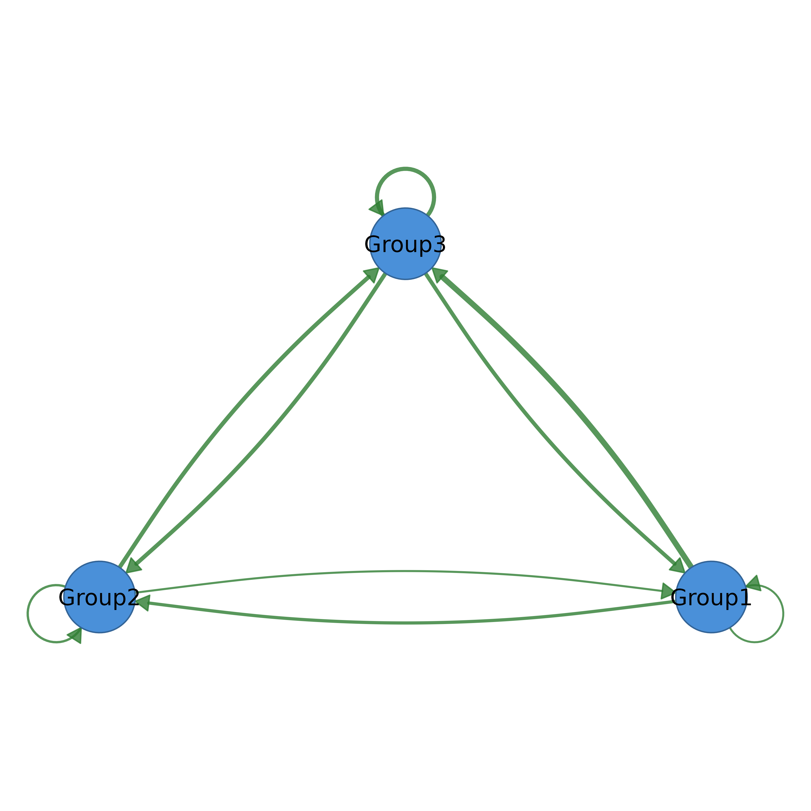

Creates a summary network where each cluster becomes a single node. Edge weights are aggregated from the original network using the specified method. Returns a cograph_network object ready for plotting.
Usage
summarize_network(
x,
cluster_list = NULL,
method = c("sum", "mean", "max", "min", "median", "density", "geomean"),
directed = TRUE
)
cluster_network(
x,
cluster_list = NULL,
method = c("sum", "mean", "max", "min", "median", "density", "geomean"),
directed = TRUE
)
cnet(
x,
cluster_list = NULL,
method = c("sum", "mean", "max", "min", "median", "density", "geomean"),
directed = TRUE
)Arguments
- x
A weight matrix, tna object, or cograph_network.
- cluster_list
Cluster specification:
Named list of node vectors (e.g.,
list(A = c("n1", "n2"), B = c("n3", "n4")))String column name from nodes data (e.g., "clusters", "groups")
NULL to auto-detect from common column names
- method
Aggregation method for edge weights: "sum", "mean", "max", "min", "median", "density", "geomean". Default "sum".
- directed
Logical. Treat network as directed. Default TRUE.
Value
A cograph_network object with:
One node per cluster (named by cluster)
Edge weights = aggregated between-cluster weights
nodes$size = cluster sizes (number of original nodes)
See summarize_network.
See summarize_network.
Examples
# Create a network with clusters
mat <- matrix(runif(100), 10, 10)
diag(mat) <- 0
rownames(mat) <- colnames(mat) <- LETTERS[1:10]
# Define clusters
clusters <- list(
Group1 = c("A", "B", "C"),
Group2 = c("D", "E", "F"),
Group3 = c("G", "H", "I", "J")
)
# Create summary network
summary_net <- summarize_network(mat, clusters)
splot(summary_net)

# With cograph_network (auto-detect clusters column)
Net <- cograph(mat)
Net$nodes$clusters <- rep(c("A", "B", "C"), c(3, 3, 4))
summary_net <- summarize_network(Net) # Auto-detects 'clusters'
#> Using 'clusters' column for clusters